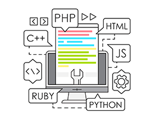
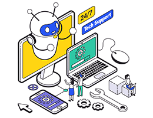

Especialización en Marketing Digital
¿Quieres ser especialista en Marketing online?¿ayudar a las empresas a crecer en el mundo digital y triunfar en Internet montándotelo por tu cuenta? Aprenderás de marketing, de SEO, de SEM, de e-commerce, ¡de ESTRATEGIA!
Programación web Front-End: HTML5, CSS3 y Java Script
La formación en programación web que te estaba buscando. Sí, si, ¡ati!. Conviertete en un samurái del código con este curso online.

Programación con Python
Instagram, Yotube, Google, Facebook, Netflix ¡y hasta la NASA! Todas utilizan Python, un lenguaje que se sitúa en el TOP 1 de los lenguajes de programación en el mundo. Inteligencia artificial, deep learning o machine learning. ¡Elige tu especialidad!
Programación con Java: Certificación OCP
El lenguaje de programación Java es uno de los más utilizados del planeta. En este curso te preparamos para que puedas obtener la Certificación OCP sin problemas.

Programación de aplicaciones móviles con Android
Con este máster de programación de aplicaciones móviles obtendras una formación certificada por Android que te abrirá puertas y ventanas emergentes alrededor del sector tecnológico y digital.
Programación de videojuegos con Unreal Engine
Especializarte en uno de los motores de videojuegos más conocidos. Programa videojuegos con Unreal Engine desde cero y hasta cien. Iníciate en el lenguaje de programación C++ y en el sistema Blueprints.